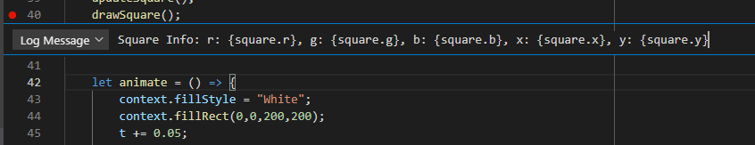

Tracking Values
The main use of console.log is to check on certain values or write messages that indicate if the code has gone through a certain point. We can do that much more easily using the Log Message option when editing a breakpoint. This will create a logpoint.

Using the logpoint, we can type in a message at any point in the code. NOTE: we cannot set a breakpoint on top of a logpoint. If there is an expression or hit count set, it will override the logpoint and no message will appear.
With the logpoint you can also print values as you would using console.log by adding {} around your variables.
Box (Exercise): Logging
Below is a square going in circle which can be found in 4-1.js.
Let us add the following logpoint to line 40:
Square Info: {square}
When we run this, it will log the values of the square. You can read this by looking at the debug console on the lower tab of VS Code, or by pressing Ctrl + Shift + i on the page and look at the console there. We can click the little carrot on the left of the variable in the debug console to see all it's values. It should look like this:

Watching Values
In the debug tab, there are three sections: Variables, Watch, and Call Stack. We already talked about the call stack, but not the other two.
Variables contains all the variables currently saved while running your program. If we pause our program
in the debugger, all the variables will show up. Variables will also show anytime we hit a breakpoint.
We can find the variables we want to observe in here and we can also modify it. Try modifying t
after pausing the program and continue. You will notice that the square will jump position.
Watch holds the variables we wish to constantly track. If we right click on a variable in Variables, we can 'Add to Watch'. Add the square to Watch. Anytime we pause the program, we can will see the square's information displayed in watch the same as how we logged it earlier.
This program runs an animation loop in the animate() function. You can
set a breakpoint on line 43 and keep continuing iteratively to see how the square changes
on each animation frame. Also feel free to try the things from the previous page on this page.
Things like expression and hit count conditional breakpoints to only pause the animation at certain times.
Summary
Essentially you can still log messages and values in the console when you need. Hopefully doing it this way will prove to be faster and also leave less of a mess compared to calling the console.log function. Also watching values should prove to be useful since you don't have to constantly log values at various points in time during your code.